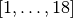

GenzKeisterOriginalQR¶
About the GenzKeisterOriginalQR class¶
The WaveBlocks Project
@author: R. Bourquin @copyright: Copyright (C) 2010, 2011, 2012, 2013, 2014, 2015, 2016 R. Bourquin @license: Modified BSD License
Inheritance diagram¶

Class documentation¶
-
class
WaveBlocksND.GenzKeisterOriginalQR(dimension, level, options={})[source]¶ This class implements a Genz-Keister quadrature rule. The quadrature is not transformed to exclude the exponential weight factor
 .
.-
__init__(dimension, level, options={})[source]¶ Initialize a new Genz-Keister quadrature rule.
Parameters: - dimension – The dimension
 of the Genz-Keister quadrature.
of the Genz-Keister quadrature. - level – The level
 of the Genz-Keister quadrature.
of the Genz-Keister quadrature.
Raise: ValueErrorif the is not in the range .[1] Alan Genz: “Fully Symmetric Interpolatory Rules for Multiple Integrals”, SIAM J. Num. Analysis. 23(6) (1986), pp. 1273-1283. [2] Alan Genz and Bradley Keister: “Fully Symmetric Interpolatory Rules for Multiple Integrals over Infinite Regions with Gaussian Weight”, J. Comp. Appl. Math. 71 (1996), pp. 299-309. - dimension – The dimension
-
construct_rule(K)[source]¶ Compute a Genz-Keister quadrature rule.
Parameters: K – The level of the Genz-Keister construction.Note
This is an internal method and there should be no reason to explicitely call it manually.
Warning
This method can be expensive and may take some time to finish. Also, the quadrature nodes may use large amounts of memory depending on the dimension and level parameters.
-
get_description()[source]¶ Return a description of this quadrature rule object. A description is a
dictcontaining all key-value pairs necessary to reconstruct the current instance. A description never contains any data.
-
get_dimension()¶ Returns: The space dimension of the quadrature rule.
-
get_nodes()[source]¶ Returns the quadrature nodes
 .
.Returns: An array containing the quadrature nodes .
-
get_number_nodes()¶ Returns: The number of quadrature nodes denoted by  that are
part of this quadrature rule
that are
part of this quadrature rule  .
.
-
 .
.